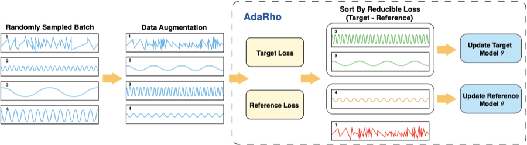
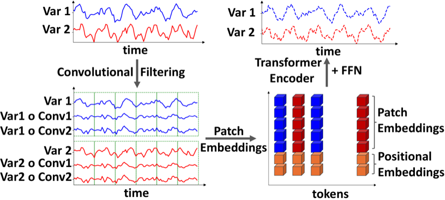
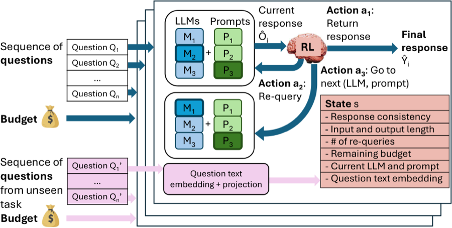

EFE

I am a Ph.D. student in Electrical and Computer Engineering at the University of Michigan, advised by Prof. Samet Oymak. I work on machine learning methods that are effective, data-efficient, and theoretically grounded.
My research interests lie at the confluence of:
I received my B.S. in Computer Engineering from Boğaziçi University in Istanbul, where I double majored in Mathematics and graduated as valedictorian.






